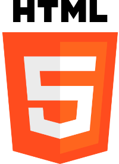
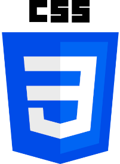

Para iniciarmos um parágrafo utilizamos a tag <p>, a quebra de linha funciona da seguinte forma
assim a frase não vai até o outro lado do site, legal ne?
A segunda parte foi como adicionar símbolos e emojis, vejam os exemplos:
© 🤓
Δ
↑
💻 🤓
Os emojis são encontrados no site EMOJIPEDIA.
Nesse tópico vamos colocar imagens no site.
 Favicon é o desenho, logo. emoji... ele pode ser qualquer coisa, ele fica localizado perto do "Resumo"
perto da barra de pesquisa.